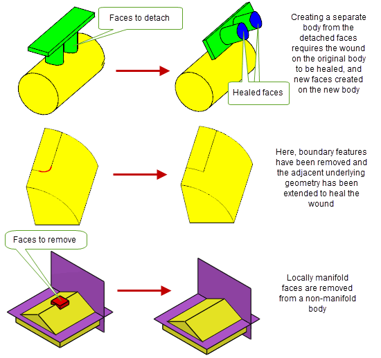

| |
Local Operations |
| <<< Booleans and Related Functionality | Chapters | Working with Sheets and Wires >>> |
Local operations are modelling operations that are restricted to a specific area of a body. They are usually performed on a face or set of faces within a model. Because the operations are restricted to specific areas, local operations can usually be performed on general bodies as well as manifold bodies, so long as those general bodies are locally manifold, that is, manifold in the area that the operation is performed in.
You can use local operations in your application to make fast changes to local regions of large and complex models. Local operations are essential if you are developing constraints-managed or parametrically-driven applications.
Parasolid provides local operations functionality for:
Figure 5-1 Offset and transform local operations on general bodies
Engineering changes to the geometry of a model often change the model’s topology as well. Parasolid’s local operations support many of these changes, including the removal of self-intersecting or clashing areas of the model, and the addition of new edges to the model at places where a vertex is split into two as a result of an operation.
Because of the nature of the changes made by local operations, however, not all topological changes can be supported, and result bodies cannot always be guaranteed to be topologically consistent. It is therefore generally recommended that you check results before continuing modelling.
Offsetting, hollowing and thickening are related modelling operations that are commonly used in MCAD systems to model, for example, objects for injection moulding or casting, or to model the outer skins of aerodynamic parts. Parasolid provides powerful offsetting functionality which itself forms the “parent” technology for its hollowing and thickening functionality. You can use offset operations directly, as well as capitalize on them via hollowing or thickening (which are themselves not considered local operations). For all these operations, you can choose to repair any degeneracies on the surface of the body involved in the operation. Information about these repairs is saved in the Parasolid report.
Offsetting is the process of moving specified faces in a solid or sheet body outwards or inwards.
In Figure 5-2, two faces whose underlying geometry is free-form are offset. Parasolid has extended the underlying surface(s) so that the new offset surfaces meet correctly.
Figure 5-2 Offset surface extended
Because offsetting operations form the basis for hollowing and thickening, the functionality described here is also available to hollowing and thickening operations.
Generating offset surfaces can sometimes cause self-intersections which, if left, would cause the body to become invalid. Parasolid can remove self-intersections automatically, generating new surfaces wherever holes remain as a result of removing the self-intersection. Figure 5-3 shows some examples.
Figure 5-3 Removing self-intersections during offsetting operations
If required, Parasolid can generate additional side faces during offset operations, in order to ensure the validity of the resulting body.
Figure 5-4 Step offset faces during offset operations
Rather than extending adjacent offset faces to determine the new position of the edge, Parasolid can optionally round off the edges between adjacent offset faces during an offset operation.

Figure 5-5 Creating blends from offset edges
Parasolid can also offset any set of connected edges in a given direction within their owning body. It can offset both laminar and non-laminar edges, and the resulting offset edges are imprinted on the body. Figure 5-6 shows an example where a set of three edges have been offset on a sheet body that contains a hole and a sharp edge, such that the resulting set of four offset edges crosses both the sharp edge and the hole.

Figure 5-6 Offsetting edges in a body
Hollowing uses offsetting technology to create a void region in a solid body. In order to hollow a body, each face in the body is offset by a specified amount. Different faces may be offset by different amounts, and the hollow body can be opened up by specifying some faces as pierce faces.
Figure 5-7 Hollowing a body with two pierce faces
Parasolid can also identify and deal with tangent pierce faces (pierce faces that share at least one smooth edge with another non-pierce face), creating the additional side faces required to hollow bodies in such a manner, as shown in Figure 5-8.

Figure 5-8 Hollowing a body using a tangent pierce face
Parasolid can also round off edges of the body that are offset by the hollow operation, as shown in Figure 5-9.

Figure 5-9 Creating blends from offset edges during hollow operations
Parasolid can also perform local hollowing operations, in which only part of a body is hollowed. For example:
Figure 5-10 illustrates how the bowl of a wine glass can be hollowed out while the stem of the glass remains solid.

Figure 5-10 Excluding faces from a hollow operation
Thickening is the process of taking a sheet body and thickening it into a solid body by offsetting it by a fixed amount. Although not strictly a local operation (because it works on a whole body, rather than specific faces in the body), Parasolid’s thickening functionality also uses the offsetting technology used by hollowing. Like offsetting and hollowing, a thickened body may undergo a variety of topological changes, and Parasolid can remove self-intersections in either the side face that is created as the result of a thicken, or in the resulting offset face itself, automatically. Parasolid can also identify and repair degeneracies on the surface of the body to be thickened.

Figure 5-11 Thickening sheet bodies
During thickening operations you can:
Some of these options are illustrated in Figure 5-12.
Figure 5-12 Thickening options
Parasolid provides sophisticated support for adding taper (sometimes known as draft) to models. You can add taper to either specific faces in a body, as described in this section, or to an entire body.
During the tapering process, specified faces in a body are modified so that they form a minimum angle with a given direction. This is commonly required when designing molds: faces that are parallel to the direction in which a part is drawn out of a mold need to be tapered inwards slightly with respect to the direction they are drawn so as to facilitate easy removal from the mold, as shown in Figure 5-13.
Figure 5-13 Tapering vertical faces to improve molded parts
Tapering is also very useful for improving the aesthetic appearance of a part. Parasolid’s tapering functionality lets you offer your users an unprecedented level of control, letting them design a part and then add taper to discrete areas afterwards, rather than requiring the designer to build tapered faces into the part from early on in the design process. You can apply different angles of taper to different faces in the body in a single operation.
Figure 5-14 Tapering different faces by different angles
As well as providing the functionality to create tapered faces, Parasolid provides tools to help you decide where taper need be applied on a body. This is particularly useful in mold design, where a small taper may need to be added to a body at all places where the face is steeper than the required taper angle, with respect to the direction of draw.
Figure 5-15 illustrates the workflow that you would typically use to analyse and add taper to a body.
Figure 5-15 Dividing a face into steep and non-steep regions
Parasolid provides three methods of taper to choose between:
Sometimes, when a face to be tapered contains edges that are not on the taper plane, regular tapering produces less than ideal results. In such cases, you can perform a step taper, in which edges of the taper face that do not lie in the taper plane are not themselves tapered: instead, a step face extending from the edge to the tapered face is created. Step tapering is illustrated in Figure 5-16.
Figure 5-16 The effect of regular tapering against step tapering
There are two types of surfaces that you can use for step tapers:
Figure 5-17 Tapered and normal step faces
If you wish, you can ask Parasolid to create a normal step automatically wherever a taper face meets a non-taper face smoothly, such as the case shown in Figure 5-18.
Figure 5-18 Automatic step tapering
In addition, Parasolid can automatically add a step face when adjacent faces become separated as a result of tapering them by different angles, as shown in Figure 5-19
Figure 5-19 Creating step faces between taper faces
Rather than allowing Parasolid to generate the step face, you can provide one yourself using a parting body, as shown in Figure 5-20.
Figure 5-20 Creating step faces from a parting sheet
Parasolid includes tools for performing simple edits to faces, such as:
A major issue with all of these operations is the wound that is usually left as a result of editing faces on a body; when a face is removed, a hole usually remains. Parasolid can repair these wounds automatically, using a number of strategies that you can control to get the precise results you want. Figure 5-22 shows a variety of face edit operations, and illustrates some of the healing processes that Parasolid performs automatically.
Figure 5-21 Healing wounds after face edits
As well as removing faces from a body, Parasolid provides tools for adding faces to a body or replacing existing faces in a body. This can be used for:
You can supply a patch yourself or, more commonly, let Parasolid generate one for you. Whichever option you choose, Parasolid fuses the patch with the original, as shown in Figure 5-22. The last illustration in the image, shows how position data can be used to aid Parasolid in building patch data.
Figure 5-22 Patching open regions in sheet bodies
As well as changing or creating faces in a body, Parasolid provides tools for creating and editing the geometry related to specific faces in a body: primarily the surfaces that are attached to the faces themselves.
If you have a model that contains rubber surfaces (that is, a face that has no geometry attached), you can create and attach a surface that fits it. Rubber surfaces can occur when scribing lines on a minimum body, for example, and this functionality provides a simple way to remove them.
You can also replace the surfaces attached to selected faces in a body, as shown in Figure 5-23
Figure 5-23 Replacing surfaces attached to faces
When replacing surfaces, Parasolid lets you:
These options are particularly useful when cleaning up parts that have been imported into Parasolid, for example as a second stage after fixing up some of the geometry of the part.
Parasolid can also transform the geometry of sets of faces in a body. Figure 5-24 shows a body in which one face has been translated and two have been rotated.
Figure 5-24 Transformations applied to a list of faces
You can spin many types of entity around an axis or sweep them in a specified direction, in order to create a new entity. For example, you can create a cylinder by sweeping a circular sheet along a path. Using spin and sweep (together with other operations) on profile bodies is a technique commonly used to create bodies from scratch.
Spin and sweep are described in more detail in Chapter 9, “Building Bodies from Profiles”.
Parasolid provides a generic face change operation that lets you perform any combination of the following local operations on any set of faces in a body in a single call:
|
Reblend any face to remain consistent with its underlying faces. |
|
|
Locally deform a set of target faces on a body while preserving and adjusting existing features. |
|
Providing a generic operation has two major advantages:

Figure 5-25 Performing operations to several faces within a single body
| <<< Booleans and Related Functionality | Chapters | Working with Sheets and Wires >>> |